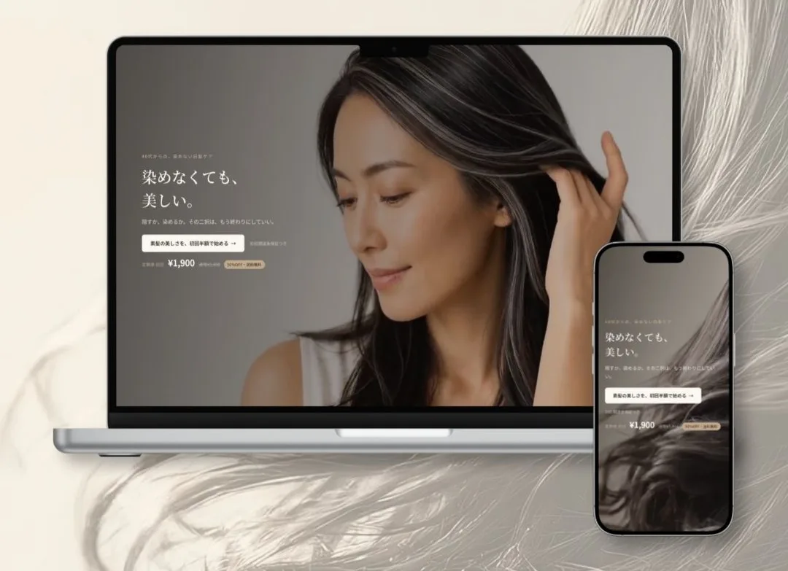
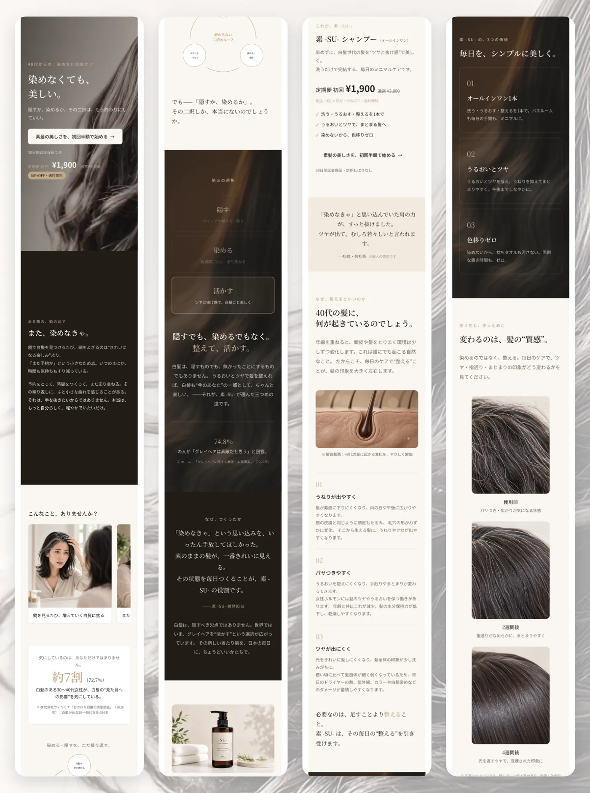

COMMISSIONED WORK / CASE STUDY
素 -SU-
Landing Page

01
OVERVIEW
概要
「隠す」から「活かす」へ。白髪を染めずに整えるヘアケアブランド「素 -SU-」のLP。Instagramから訪れた人に、世界観への共感を入口にして定期購入を申し込んでもらうことを目指しました。
02
TARGET
ターゲット
白髪が気になり始めた、都会に住む40代前半の女性（男女問わず使える設計）。「染めたくないけれど、放っておくのも不安」と感じていて、無理な若作りではなく、年齢を受け入れながら効率よく美しくありたい人を想定しました。
03
DESIGN POINT
工夫したポイント
- 「隠すから、活かすへ」という提案軸海外で広がる「グレイヘアを活かす」価値観を日本向けに置き換えました。3C分析で白髪染め・自然派ブランドの弱点を洗い出し、「染めない×都会的ミニマル×自己肯定」という、まだ空いている立ち位置を狙っています。
- 全工程でAIを活用Claudeで企画・ペルソナ・構成・コピーを磨き、キービジュアルはAI画像生成、世界観を伝える動画はAI動画生成で制作。コーディングもAIの支援を受けながら、一人で短期間に仕上げました。
- 説得力と法令順守の両立化粧品として薬機法上使える表現の範囲を踏まえて、訴求コピーを調整しました。
04
SCREENS
画面イメージ

05
VIDEO
使用した動画
AI動画生成
Visit Website ↗（外部サイトへ移動します）
NEXT PROJECTLUMEA SHIFT
制作について相談する →
※クラウドソーシング経由の方は、応募元のメッセージからご連絡ください。